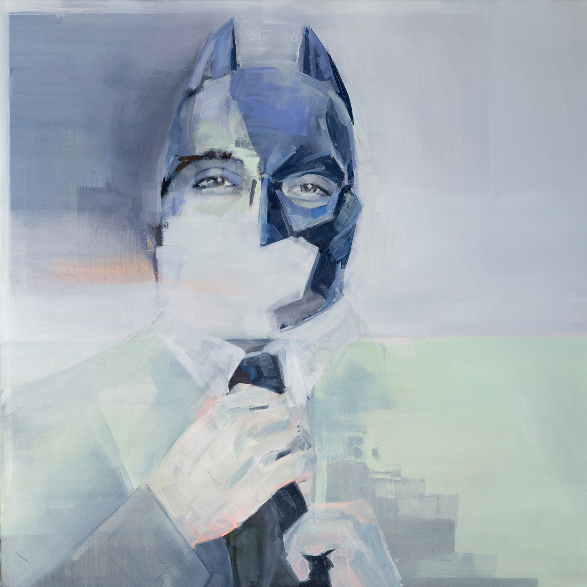
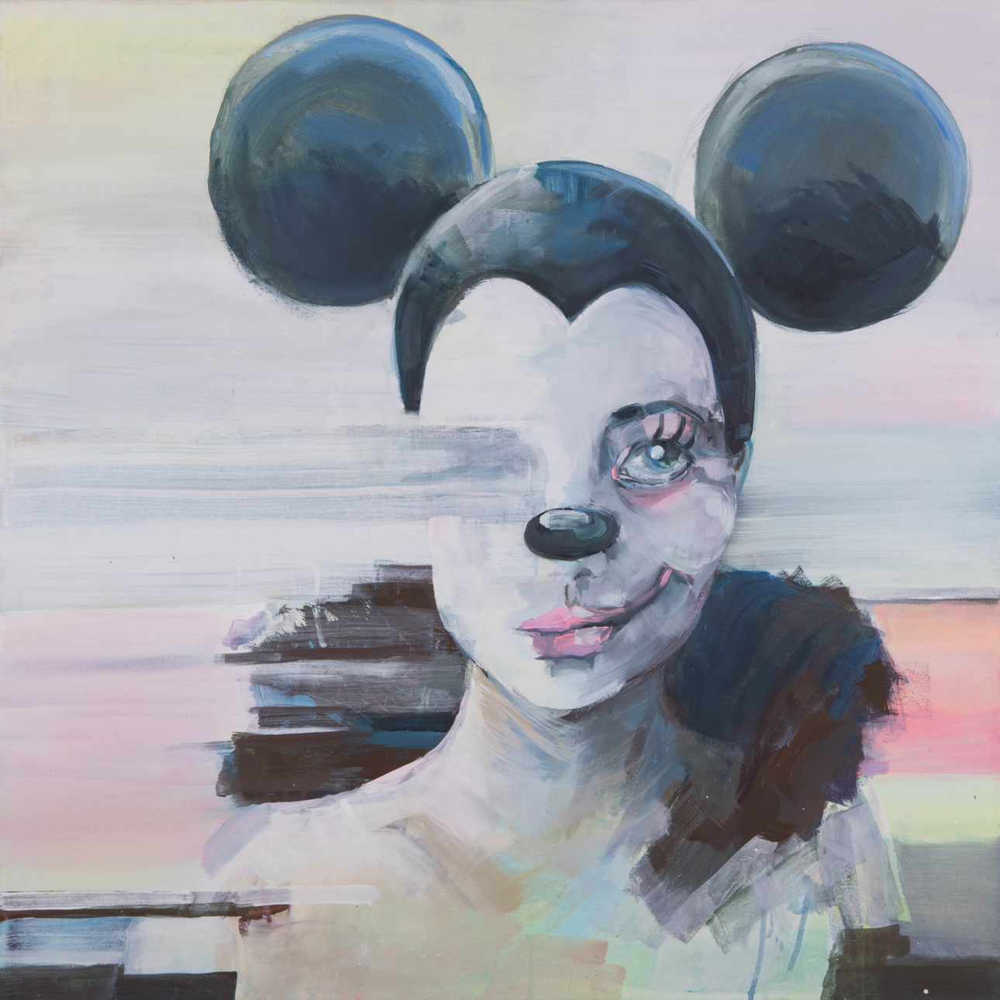
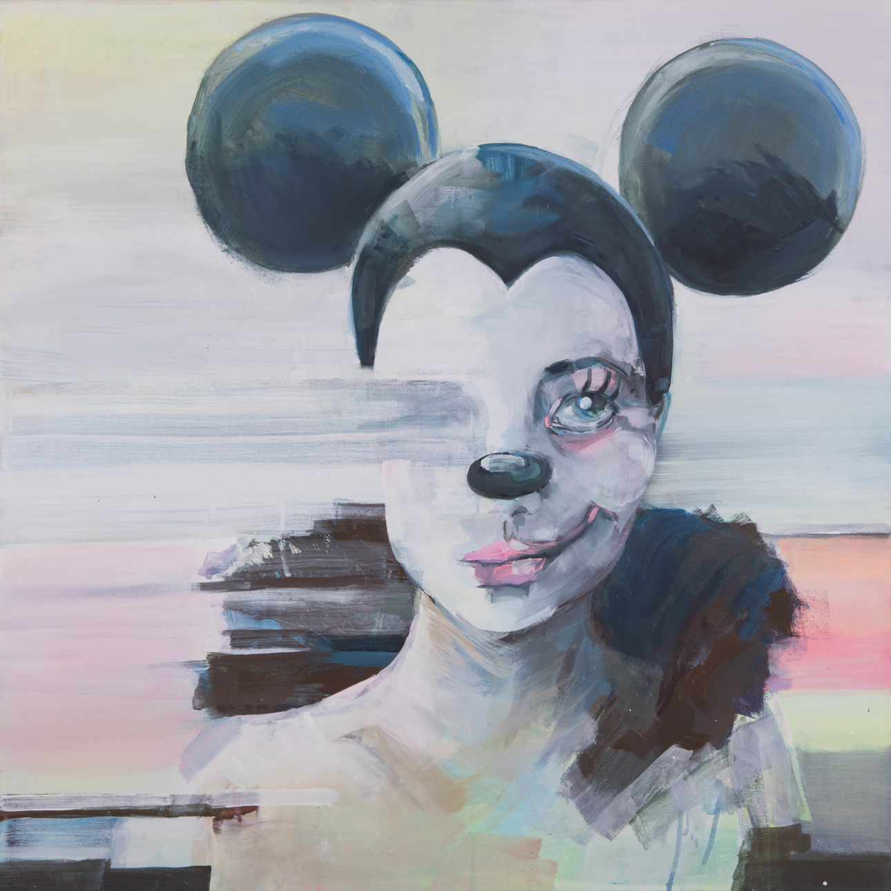

oil and acrylic paint
80cm x 80cm
Face Dead
x  

oil and acrylic paint
80cm x 80cm
oil and acrylic paint
100cm x 100cm


oil and acrylic paint
80cm x 80cm

Face Dead tells the story of people who’ve suffered untimely deaths. They are victims of terrorist attacks. Unfortunately, social media platforms like Facebook do not let them rest in peace. Relatives can take over their profile, but it will stay in the digital world. A note “remembering…” in front of their profile name is the only hint of them passing away. These people have the right to privacy so let them be anonymised and remember them as superheroes or legends.
…